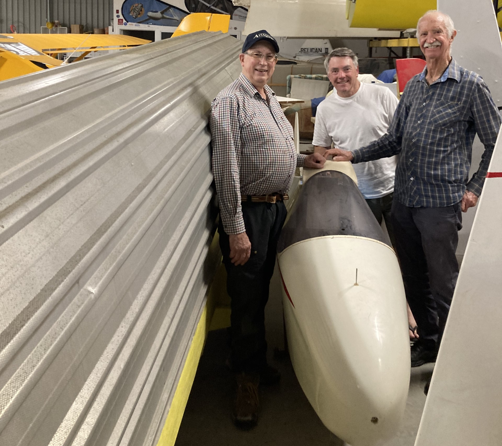

The Australian Gliding Museum collects, preserves and restores vintage gliders, The Joey is one of a small number of Australian, locally designed gliders. The Museum also has the 'Spruce Goose' in their collection.